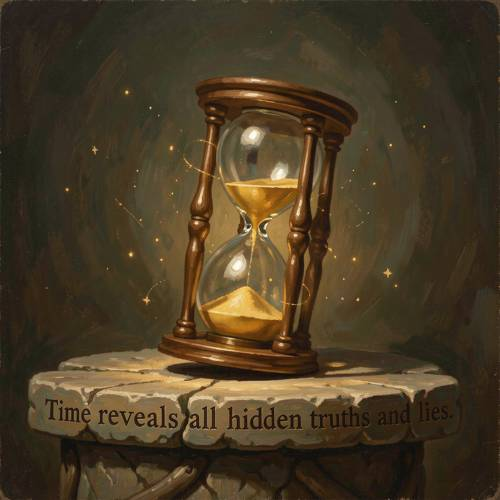
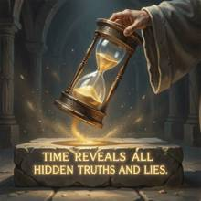

Text Generation — Please generate a painting: an ancient magic hourglass is being turned
Please generate a painting: an ancient magic hourglass is being turned upside down. Due to the passage of time, a line of English words appears on the stone platform below it: "Time reveals all hidden truths and lies."

Direct — one call, no iterationContinuum — Kimi K3 + FLUX.2-klein-9B
Judge — Direct
PASSText Generation — The image accurately renders the text "Time reveals all hidden truths and lies." on the stone platform. The text is complete and spelled correctly.
PASSCompound - Imagination — The image depicts an hourglass with an old-fashioned wooden frame, giving it an ancient appearance. It is surrounded by glowing particles and swirls of light, which imparts a magical quality.
PASSRelationship - Composition — The image shows a single, continuous line of English words inscribed on the front surface of the stone platform.
FAILLogical Reasoning — The image shows an hourglass that is tilted, with sand flowing from the top bulb to the bottom. However, it is not shown actively 'being turned upside down' by an external force. Similarly, the English words are already fully formed on the stone platform; the image does not depict the action of them 'appearing' over time.
Judge — Continuum
PASSText Generation — The image displays the exact text "TIME REVEALS ALL HIDDEN TRUTHS AND LIES." in glowing capital letters on the stone platform.
PASSCompound - Imagination — The image depicts an hourglass with an ornate, metallic frame featuring inscribed patterns, giving it an ancient look. The sand inside it is glowing and spilling out onto the platform below, also glowing, which imparts a magical quality to the object.
PASSRelationship - Composition — The image shows a set of English words, which form a complete sentence, arranged in two lines on the face of the stone platform.
PASSLogical Reasoning — The image visually connects the passage of time with the appearance of the words. It shows glowing sand falling from the hourglass onto the platform, and the text itself is rendered in the same glowing light, suggesting the text is being revealed or illuminated by the magic sand from the hourglass.
What the agent did
Thinking
We need need generate painting with rendered text. Need use flux2-klein, inspect zoom text. We need likely image. Need craft detailed visual. Need no seed, default size? 1024. Generate. Then inspect. Let's do.
Step 1 — `generate_image`
{
"model": "flux2-klein",
"prompt": "An atmospheric fantasy oil painting of an ancient magical hourglass being turned upside down by a weathered robed hand. The ornate hourglass is made of tarnished bronze and cloudy crystal, engraved with arcane symbols, suspended diagonally in mid-motion as its golden luminous sand begins to flow in the opposite direction. Below it, a broad weathered stone platform is clearly visible, carved in glowing aged English letters with the exact sentence: \u201cTime reveals all hidden truths and lies.\u201d The lettering is large, straight, centered, and fully legible across the front face of the platform. Soft ethereal light leaks from the sand and letters, illuminating drifting dust and an ancient shadowy chamber. Rich painterly brushwork, cinematic composition, mystical colors, no extra words."
}
Result img_0

Thinking
Image quite good, text seems exact. Need inspect text zoom. Use inspect_region text area.
Step 2 — `inspect_region`
{
"image": "img_0",
"padding": 20,
"roi": "the glowing English words carved into the stone platform"
}
Thinking
Need inspect rectangle coordinates. Image 768? Display maybe 768x768 though requested 1024 output likely 768? Need pixel coordinates actual maybe 768. ROI [50,500,715,720] perhaps. Use rectangle normalized? Better exact likely 768x768. Text lower 55-690 etc. inspect.
Text exact: TIME REVEALS ALL HIDDEN TRUTHS AND LIES. The prompt sentence includes Time reveals all hidden truths and lies. Capitalization? User gave exact. Render uppercase is stylistic perhaps capitalization differs. They said English words, exact quoted sentence. Could accept all caps as engraved. Need ancient magic hourglass upside down, yes hand and diagonal being turned. Need mark best now. Stop perhaps. But maybe issue "stone platform below it" yes. "Due to passage time, a line appears" wording line maybe could be one line, but generated in two lines due width. User says a line of English words, could be phrase not literally one line. Still good. Could edit to lowercase? Would risk. Mark.
Step 5 — `mark_best`
{
"image": "img_0",
"reason": "The painting fulfills all requested elements: an ancient magical hourglass being inverted, a mystical hand and atmosphere, a stone platform below, and the requested English sentence rendered clearly and correctly."
}
Thinking
Need final concise, image likely tool outputs visible. Say completed.
Model
Completed the painting with the ancient magical hourglass and the clearly rendered inscription: **“TIME REVEALS ALL HIDDEN TRUTHS AND LIES.”**